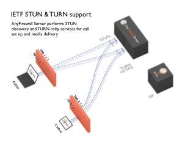

Overview
The Eyeball AnyFirewall™ Server (AFS) enables clients behind firewalls to communicate with peers. The STUN protocol enables a client to learn its NAT firewall type, and to determine the best way to communicate with peers. If a client can communicate directly with a peer, without using the AnyFirewall™ Server to relay data, that may often be preferred; however, in the cases when this is not possible, clients may allocate ports on the server. These ports can then be used to send and receive data to/from peers that the client may have otherwise been unable to communicate with due to the NAT firewall the client is behind.
Note: The AnyFirewall™ Server supports UDP, TCP and TLS for relaying
Protocols and protocol translation supported by AFS:
- UDP from the client
- UDP to the peer
- TCP from the client
- UDP or TCP to the peer
- TLS from the client
- UDP or TCP or TLS to the peer
The server can be used in combination with other components in a VoIP deployment such as SIP proxies, gateways, softswitches or application servers. Used in combination with soft clients such as Eyeball Messenger SDK, based on the Eyeball AnyFirewall™ Engine, AnyFirewall™ Server interacts seamlessly with media servers and media relays.
While the main area of application is voice-over-IP, the AnyFirewall™ Server can be used to support firewall traversal for other applications such as distributed gaming platforms or file sharing/file transfer applications.
A sample data flow using the AnyFirewall™ server with two SIP softclients is outlined in figure 1. Client applications - such as those equipped with Eyeball AnyFirewall™ Engine - use the server to detect their public IP address and port (using STUN) or to allocate ports for relaying data.

Clustering
The Eyeball AnyFirewall™ Server can be clustered using DNS SRV as a load balancing mechanism.
Note: In order to add an AnyFirewall™ Server to the cluster, it is sufficient to add another server machine and allow clients to connect to the new server. All AnyFirewall™ Servers should use the same database to allow information to be shared among servers
Security
The Eyeball AnyFirewall™ Server prevents unauthorized access to its resources by requiring a shared username/password mechanism between server and clients. Any allocation of resources on the AnyFirewall™ Server requires authentication.
The authentication mechanism is based on long term credentials, as defined by STUN. Long term credentials (username and password) are stored in the database (in the account table, see Database Tables) and are usually generated by a provisioning system when an account for a user is setup. In a typical application environment, those username and passwords are the same as on a SIP proxy.
Bandwidth Throttling
Traffic for a user is throttled using a common token bucket algorithm that allows for short-term traffic bursts, but prevents a user from misusing server resources. If such throttling is not required, the parameter enable_token_per_user_throttling in the config file should be set to no. This throttling can be controlled with the help of config parameters user_token_per_second and user_bucket_duration.
Similarly, there is a provision for the server's overall throttling as well. This behavior is controlled by config parameter server_token_per_second and server_bucket_duration.
Wiretapping
Due to the increasing demands on ISPs to employ wiretapping, Eyeball AnyFirewall™ Server enables an ISP to save the traffic of certain users, which can also easily be associated with the source, destination, time, and duration of the call.
The traffic for each wiretapped call is stored in two files: one for each direction. The location of the files is determined by the wiretap_dir option in the server's configuration file (see Stun Relay Configuration). The format of the name of each file is as follows:
<User>-<CurrentTime>-<SourceIP>-<DestinationIP>-<DestinationPort>.topeer.tap
<User>-<CurrentTime>-<SourceIP>-<DestinationIP>-<DestinationPort>-toclient.tapEyeball Server Management
Note: Eyeball AnyFirewall™ Server comes packaged with Eyeball Server Management, a web-based application that simplifies the administration and monitoring of the server products from Eyeball Networks, including the Eyeball AnyFirewall™ Server, SIP Proxy Server, and XMPP Server
There are three different components of the ESM:
- User Administration: add, remove, or disable user accounts, modify account settings, and view usage statistics for an account
- Server Statistics: provides service usage statistics for servers
- Server Monitoring: provides real-time state and load information about your company's servers